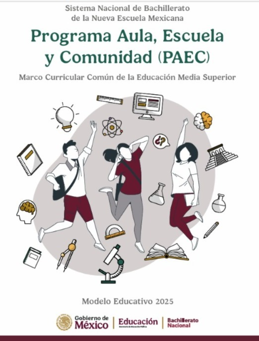
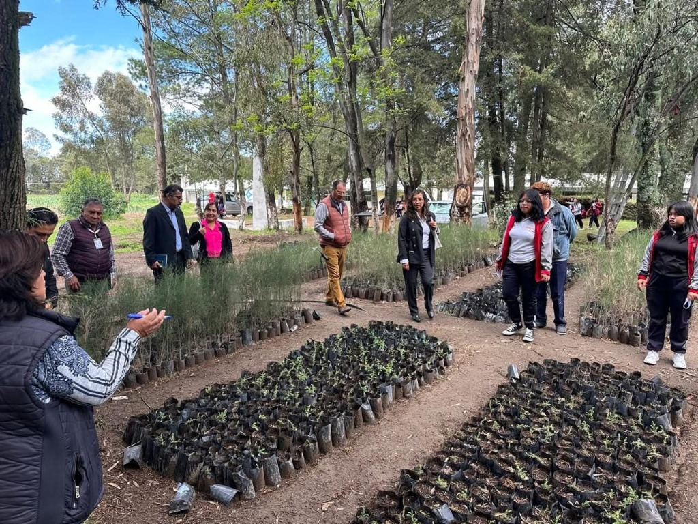

CBTa 134
San Francisco Tetlanohcan, Tlaxcala
Centro de Bachillerato Tecnológico Agropecuario, sede principal del Programa Aula-Escuela-Comunidad en Tlaxcala.
Sobre Nosotros
El CBTa 134 es la sede principal que coordina el Programa Aula-Escuela-Comunidad (PAEC) "Proyectos para la conservación de la biodiversidad y la preservación de las costumbres y tradiciones de la región centro-sur y oriente del estado de Tlaxcala".
📍 Ubicación
C. Josefa Ortiz de Domínguez
San Francisco Tetlanohcan, Tlaxcala, C.P. 90840
🎓 Carreras Técnicas
🎓 Sistema Abierto SAETAM
También contamos con el Sistema Abierto de Educación Tecnológica Agropecuaria (SAETAM/BAETAM) para quienes desean continuar sus estudios.

Modelo Educativo 2025 - Sistema Nacional de Bachillerato
Proyecto Principal
Conoce el proyecto insignia de nuestra institución
Guardianes de la Malinche
Un proyecto dedicado a la conservación y reforestación de la zona de La Malinche, donde nuestros estudiantes participan activamente en:
- Reforestación de áreas degradadas
- Producción de plantas nativas en vivero
- Educación ambiental a la comunidad
- Monitoreo de especies forestales

BAETAM
Bachillerato de Educación Tecnológica Agropecuaria integrado al CBTa 134
BAETAM forma parte integral del CBTa 134, ofreciendo formación técnica especializada en el sector agropecuario. Los estudiantes de este programa también participan activamente en el PAEC.
Información detallada próximamente
Ubicación
Encuéntranos en San Francisco Tetlanohcan, Tlaxcala
📍 Calle Josefa Ortiz de Dominguez, Col. Jesus Xolalpan, CP 90843
Contacto Oficial
Comunícate con nosotros
📞 Información de Contacto
📧 Email:
cbta134@yahoo.com.mx
📍 Dirección:
Carretera Tetlanohcan a Malintzin Km. 3,
San Francisco Tetlanohcan, Tlaxcala. C.P. 90800
¿Listo para participar?
Conoce el proceso para unirte al Programa PAEC